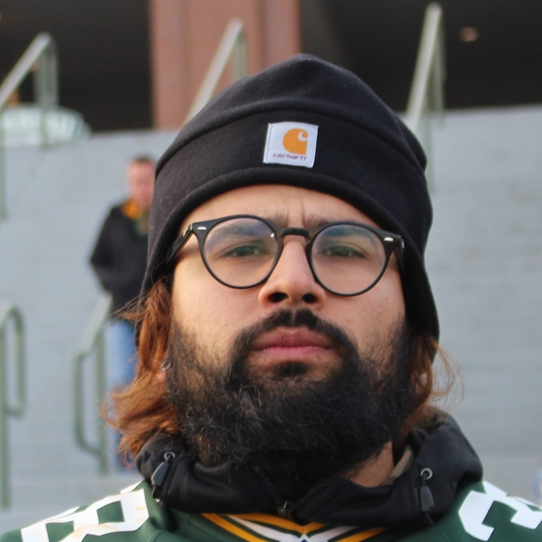

Artist/Advisor
I'm a artist, fashion enthusiast, aspiring developer, and project coordinator that is passionate about changing the world. I currently work at Zappos.com in Downtown, Las Vegas - A place where I feel like I can have an immidiate impact.
Today, development work has become my passion and focus because of its ability to rapidly change the world works. I hope to one day become a resource and catalyst for positive change in the workplace environment and customer experience.